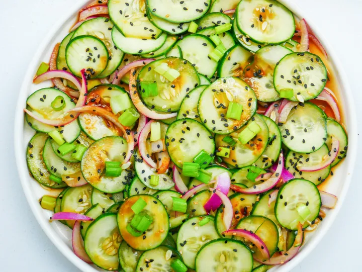

Cucumber Salad with Ginger

In this recipe I will describe how to prepare this easy and delicious asian style cucumber salad.
This easy to prepare cucumber salad is one of my favorites ever since I tried it the first time during my vacation at the beautiful
Philippines. Here I'm going to share the way this dish is prepared so you can enjoy it too!
Ingredients
- 1 Cucumber
- 1/2 cup thinly sliced onion
- 1 tsp Ginger, finely minced
- Soy Sauce
- Sesame Seeds
Steps
- Cut the cucumber into thin slices and add it to a bowl. Combine it with the sliced onion.
- Mix the ginger and soy sauce in a seperate bowl.
- Add the dressing to the prepared cucumber and toss until the cucumbers are fully coated in soy sauce.
- Add some sesame seeds and toss again.
- Serve the salad with a topping of sesmae seeds.
- Enjoy!